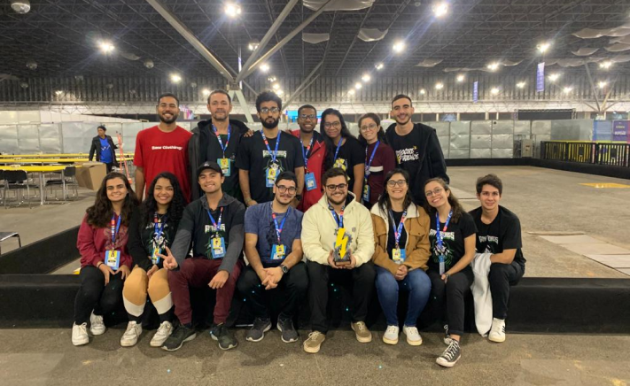
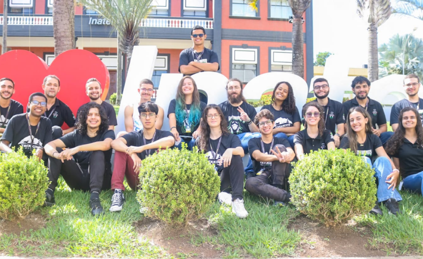
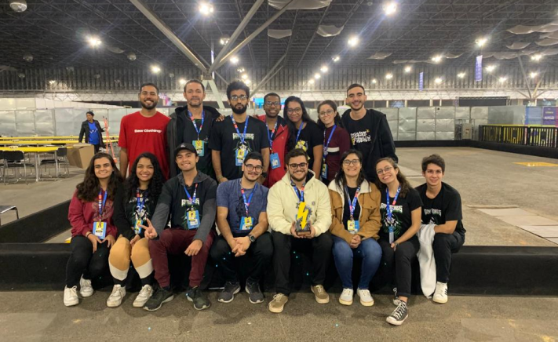
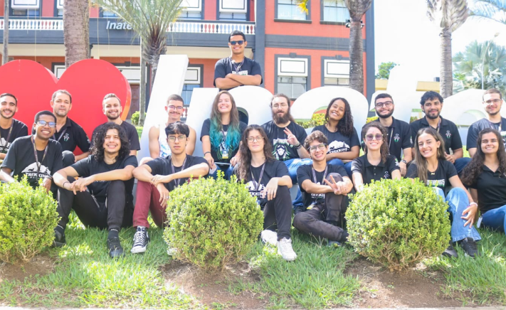
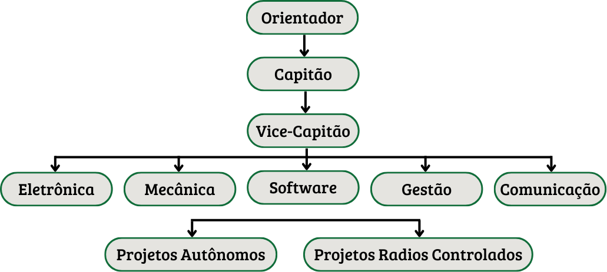

Quem Somos?
A Goytaborgs é uma equipe brasileira de robótica competitiva, sediada no Instituto Federal Fluminense, Campus Campos Centro, localizado em Campos dos Goytacazes, no Rio de Janeiro. Composta por estudantes de diferentes cursos de graduação, a equipe tem como principal objetivo fomentar o desenvolvimento tecnológico e profissional de seus membros e colaboradores.
Nossa História
 



A equipe teve início através de uma fascinante viagem a um dos maiores eventos de tecnologia da Améria Latina, a Campus Party, em 2017. Entre palestras inspiradoras e projetos revolucionários, nasceu ali um sonho: trazer a robótica para o IFF Campus Campos Centro. Com aproximadamente 40 alunos motivados a aplicar seus conhecimentos e aprofundar suas habilidades na prática, nasceu a Goytaborgs.
Estrutura
A equipe é estruturada de maneira sólida e organizada, contando com um orientador, um capitão geral, um vice-capitão e 5 capitanias especializadas, abrangendo áreas vitais como Software, Eletrônica, Gestão, Comunicação e Mecânica. Além disso, cada projeto que desenvolvemos é liderado por um gerente dedicado, garantindo o máximo de eficiência e qualidade em todas as nossas iniciativas.
Ensino e Aprendizagem
A Goytaborgs é responsável por tonar o estudante protagonista de seu processo de ensino e aprendizado. Através dos projetos desenvolvidos, junto com ações sociais, apresentação em feiras, palestras e minicursos, o membro da equipe desenvolve habilidades essênciais para sua formação profissional. Além disso, a integração com os colegas fortalece os laços com a instituição de ensino, reduzindo a evasão escolar e preparando os estudantes para uma inserção qualificada no mercado de trabalho. Na Goytaborgs, acreditamos no poder transformador da educação prática e colaborativa, impulsionando nossos membros rumo a um futuro de sucesso.